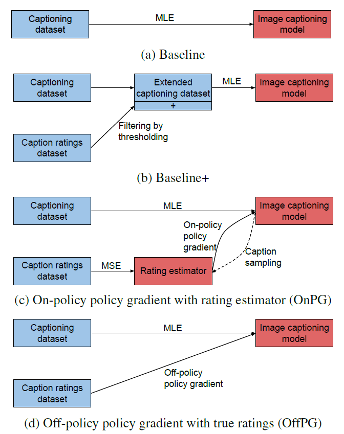
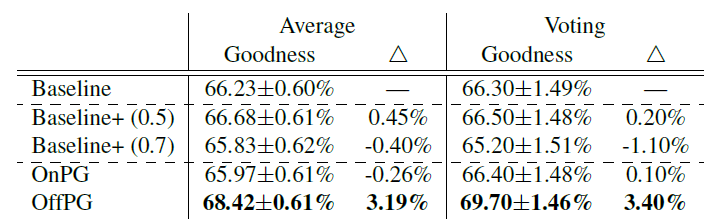
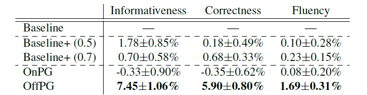
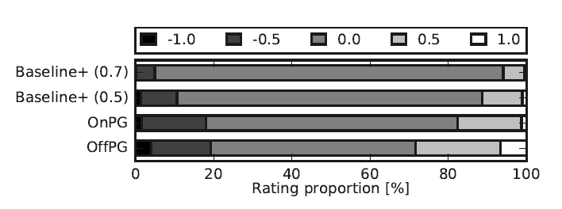
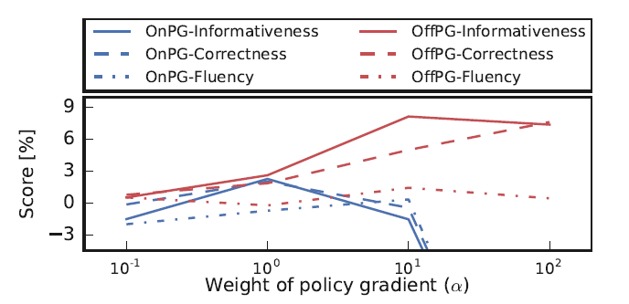

背景
图像描述的人类评估是最准确的方式，但因为成本高昂而难以使用在训练之中，更多则是使用于对模型的测试。这样测试会产生副产品：Caption Ratings Dataset. 之中有image $I$, machine-generated caption $c$, and human judgment for the caption quality $r(c|I) \in \mathbb{R}$. 相比于传统的supervised-learning datasets, caption Ratings Dataset有这么几个优点：
收集成本较低，不需要人类专家来专门对图像进行描述
作为副产品，在测试时即可生成，不需要额外开销
multiple raters之间很容易达成共识，可通过如平均的方式减少noise
那些人类评价很低的caption能作为负样本来学习
因此作者期望采用Caption Ratings Dataset结合RL来提升模型的描述能力。
模型：Reinforcing Caption Generator using Ratings
给定一个数据集$\mathcal{D}$ with triplets $(I, c, r(c|I))$，目标是最大化输出caption的期望评分
$$
\mathcal{J} (\theta) = \mathbb{E}_{I \sim p_\mathcal{D}, c \sim p_\theta(c|I)}[r(c|I)] = \sum_I p_\mathcal{D}(I) \sum_c p_\theta(c|I) r(c|I)
$$
因此可以采用Monte-Carlo sampling来计算policy gradient：
$$
\nabla_\theta \mathcal{J}_{\text{PG}}(\theta) = \mathbb{E}_\pi [(r(c|I)-b) \nabla_\theta \ln p_\theta (c|I)] \approx \frac{1}{S} \sum_{s=1}^S (r(c|I)-b) \nabla_\theta \ln p_\theta (c_s|I_s)
$$
$$
\text{where } \mathbb{E}_\pi \text{ represents }\mathbb{E}_{I \sim p_\mathcal{D}, c \sim p_\theta(c|I)}
$$
但是这里存在一个很棘手的问题，评价$r(c|I)$十分稀疏，对大多数captions的真实评价其实是未知的。而且sample出来的$r(c_s|I_s)$未必能代表整个数据集。因此作者给出了两种方式来利用这些信息。
On-policy policy gradient with rating estimates
既然rating function很稀疏，那么可以训练一个caption quality estimator $\tilde{r}(c|I;\phi)$来自行评价caption. 训练方式是在有真实评分的数据上最小化MSE. 这样用$\tilde{r}(c|I;\phi)$来代替，策略梯度可表示为：
$$
\nabla_\theta \mathcal{J}_{\text{PG}}(\theta) \approx \frac{1}{S} \sum_{s=1}^S (\tilde{r}(c_s|I_s;\phi)-b) \nabla_\theta \ln p_\theta (c_s|I_s)
$$
这种想法非常自然，缺什么就补什么。但缺点也很明显，如果训练出来的estimator效果本身就不好，就不能达到期望的目标。实际上作者也发现，这种方式会对模型的性能产生严重的负面影响。
Off-policy policy gradient with true ratings
修改采样过程，仅仅使用真实的ratings，同时保证训练过程不受无真实rating的caption影响。具体则是定义了一个distribution $q(c|I)$来代替真实的$p_\theta(c|I)$.
$$
q(c|I) = (1- \epsilon)p_\mathcal{D} (c|I) + \epsilon U(c)
$$
这里$\epsilon$远小于1，这样就有大概率采样到有rating的caption，否则就吧reward设置为baseline $b$来排除其他影响。$U(\cdot)$表示uniform distribution（作用？）这样策略梯度可表示为：
$$
\begin{align*}
\nabla_\theta \mathcal{J}_{\text{PG}}(\theta) &= \mathbb{E}_\pi [(r(c|I)-b) \nabla_\theta \ln p_\theta (c|I)] \\
&= \mathbb{E}_\beta \left[\frac{p_\theta(c|I)}{q(c|I)} (r(c|I)-b) \nabla_\theta \ln p_\theta (c|I)\right] \\
&\approx \frac{1}{S} \sum_{s=1}^S \frac{p_\theta(c|I)}{q(c|I)} (r(c_s|I_s)-b) \nabla_\theta \ln p_\theta (c_s|I_s)
\end{align*}
$$
$$
\text{where } \mathbb{E}_\beta \text{ represents }\mathbb{E}_{I \sim p_\mathcal{D}, c \sim q(c|I)}
$$
这种方式能够重复previous experiences with known rewards. 因此可以看作为在ratings dataset中replay the experiences来训练captioning model.
Curriculum learning
在captioning dataset上用MLE训练一个模型
使用前面提到的方式来在caption ratings dataset上对模型进行微调
为避免微调时过拟合，加上了正则项MLE loss
$$
\nabla_\theta \mathcal{J} (\theta) = \alpha \nabla_\theta \mathcal{J}_{\text{PG}} (\theta; \mathcal{D}_{\text{CR}}) + \nabla_\theta \mathcal{J}_{\text{MLE}}(\theta; \mathcal{D}_{\text{IC}})
$$
$$
\mathcal{D_{\text{IC}}} \text{: caption labeled dataset}
$$
$$
\mathcal{D_{\text{CR}}} \text{: caption ratings dataset}
$$
实验
数据集
Image captioning dataset: Conceptual Captions (Sharma et al. 2018)
Caption ratings dataset: Caption-Quality dataset (Levinboim et al. 2019)
Conceptual Captions Challenge T2 dataset to evaluate the models
训练方法

评价方法：人类评价
- Single-caption evaluation: 给每个评价者单张图片，判断是否Good
- Side-by-side caption evaluation: 同时展示两个captions (另一个来自于baseline model). 针对informativeness, correctness, fluency来比较两个captions.
实验结果




OffPG的提升效果较为明显